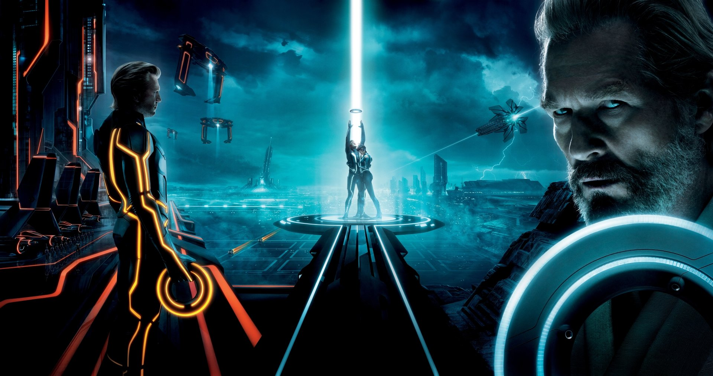
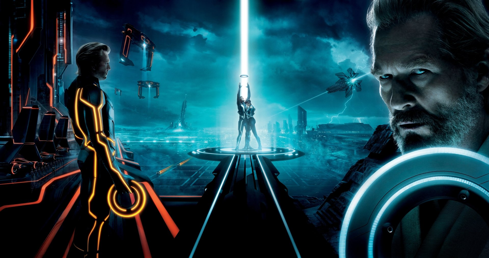

Tron: Legacy (stylized as TRON: Legacy) is a 2010 American science fiction action film directed by Joseph Kosinski, in his feature directorial debut, from a screenplay written by Adam Horowitz and Edward Kitsis, based on a story by Horowitz, Kitsis, Brian Klugman and Lee Sternthal. It is a sequel to the 1982 film Tron, whose director Steven Lisberger returned to produce. The cast includes Jeff Bridges and Bruce Boxleitner reprising their roles as Kevin Flynn and Alan Bradley, respectively, as well as Garrett Hedlund, Olivia Wilde, James Frain, Beau Garrett and Michael Sheen. The story follows Flynn's adult son Sam, who responds to a message from his long-lost father and is transported into a virtual reality called "the Grid," where Sam, his father, and the algorithm Quorra must stop the malevolent program Clu from invading the real world.
Interest in creating a sequel to Tron arose after the film garnered a cult following. After much speculation, Walt Disney Pictures began a concerted effort in 2005 to devise Tron: Legacy, with the hiring of Klugman and Sternthal as writers. Kosinski was recruited as director two years later. As he was not optimistic about Disney's Matrix-esque approach to the film, Kosinski filmed a high-concept, which he used to conceptualise the universe of Tron: Legacy and convince the studio to greenlight the film. Principal photography took place in Vancouver over 67 days, in and around the city's central business district. Most sequences were shot in 3D and ten companies were involved with the extensive visual effects work. Chroma keying and other techniques were used to allow more freedom in creating effects. Daft Punk composed the musical score, incorporating orchestral sounds with their trademark electronic music.
Tron: Legacy premiered in Tokyo on November 30, 2010 and was theatrically released in North America on December 17, 2010. Disney vigorously promoted the film across multiple media platforms, including merchandising, consumer products, theme parks and advertising. Upon its release, the film received mixed reviews from film critics, who praised the visual effects, production design and soundtrack, but criticized the character development, cast performance and story. The film grossed $400 million during its worldwide theatrical run, making it a box office success. The film was nominated for an Oscar for Best Sound Editing at the 83rd Academy Awards, but lost to Inception. Like its predecessor, Tron: Legacy has also been described as a cult classic.
In 1989, seven years after the events of the first film, Kevin Flynn, who has since been promoted CEO of ENCOM International, disappears. Twenty years later, his son Sam, now ENCOM's primary shareholder, takes little interest in the company beyond playing an annual prank on its board of directors. In his most recent stunt, he releases the company's signature operating system for free online. Alan Bradley, an ENCOM executive and Flynn's old friend, quietly applauds the action, believing that the newest version is an attempt to gouge customers and that the early release is aligned with Kevin Flynn's ideals of free and open software. Sam escapes the ENCOM building by parachuting off the roof, but is arrested on the ground for trespassing.
Alan posts bail for Sam to release him from police custody and meets with him to discuss a strange pager message originating from Flynn's shuttered video arcade. Sam investigates the arcade and discovers a hidden basement with a large computer and laser, which suddenly digitizes and downloads him into the Grid, a virtual reality created by Flynn that exists as an independent system. He is quickly captured and sent to "the Games," where he is forced to fight a masked program named Rinzler. When Sam is injured and bleeds, Rinzler realizes that Sam is human, or a "User" and takes him before Clu, the Grid's corrupt ruling program who resembles a young Kevin Flynn. Clu nearly kills Sam in a Light Cycle match, but Sam is rescued by Quorra, an "apprentice" of Flynn, who conveys him to his father's hideout outside Clu's territory.
Flynn reveals to Sam that he had been working to create a "perfect" computer system and had appointed Clu and Tron (a security program created by Alan) its co-creators. During this construction, the trio discovered a species of naturally occurring "isomorphic algorithms" (ISOs) not conceived by Flynn, bearing the potential to resolve various mysteries in science, religion and medicine. Clu, considering them an aberration, betrayed Flynn, killed Tron, and destroyed the ISOs. Meanwhile, the "Portal" permitting travel between the two worlds had closed, leaving Flynn trapped in the system. Having gained complete control, Clu sent the message to Alan in order to lure Sam onto the Grid and reopen the Portal for a limited time. As Flynn's "identity disc" is the master key to the Grid and the only way to traverse the Portal, Clu expects Sam to bring Flynn to the Portal so he can take Flynn's disc, go through the Portal himself, and impose his idea of perfection on the human world.
Against his father's wishes, Sam returns to Clu's territory on Quorra's tip-off to find Zuse, a program who can provide safe passage to the Portal. At the End of Line Club, its owner Castor reveals himself to be Zuse, then betrays Sam to Clu's guards. In the resulting fight, Flynn rescues his son, but Quorra is injured and Zuse gains possession of Flynn's disc. Zuse attempts to bargain with Clu for the disc, but Clu simply takes the disc and destroys the club along with Zuse. Flynn and Sam stow away aboard a "solar sailer" transport program, where Flynn restores Quorra and reveals her to be the last surviving ISO.
The transport is intercepted by Clu's warship; as a diversion, Quorra allows herself to be captured by Rinzler, who Flynn recognizes as Tron, reprogrammed by Clu. Sam reclaims Flynn's disc and rescues Quorra, while Flynn takes control of a Light Fighter on the flight deck. Clu, Rinzler, and several guards pursue the trio in Light Jets. Upon making eye contact with Flynn, Rinzler remembers his past and deliberately collides with Clu's Light Jet, but Clu uses Tron's spare baton to escape while Tron falls into the Sea of Simulation below. Clu confronts the others at the Portal, where Flynn reintegrates with his digital duplicate, destroying Clu along with himself. Quorra, having switched discs with Flynn, gives Flynn's disc to Sam and they escape together to the real world, rematerializing themselves. In Flynn's arcade, Sam backs up and deactivates the system. He then finds a waiting Alan and tells him he plans to retake control of ENCOM, naming Alan chairman of the board. He departs on his motorcycle with Quorra, and she witnesses her first real sunrise.
Garrett Hedlund in front of a microphone during a press conference. Jeff Bridges in front of a microphone during a press conference. Olivia Wilde in a press conference. Top to bottom: Garrett Hedlund, Jeff Bridges and Olivia Wilde star in the film. Garrett Hedlund as Samuel "Sam" Flynn, a primary shareholder of ENCOM who, while investigating his father's disappearance, is transported onto the Grid himself.[8] Hedlund won a "Darwinian casting process" which tested hundreds of actors, being chosen for having the "unique combination of intelligence, wit, humor, look and physicality" that the producers were looking for in Flynn's son. The actor trained hard to do his own stunts, which included jumping over cars and copious wire and harness work.[9]
Owen Best as Young Sam Flynn. Jeff Bridges as Kevin Flynn, the former CEO of ENCOM International and creator of the popular arcade game Tron based on his own experiences in ENCOM's virtual reality, who disappeared in 1989 while developing "a digital frontier that will reshape the human condition." Bridges also portrays Clu (Codified Likeness Utility), a more advanced incarnation of Flynn's original computer-hacking program, designed as an "exact duplicate of himself" within the Grid, via digital makeup and voiceover, while John Reardon portrays Clu physically.[10] Olivia Wilde as Quorra, an "isomorphic algorithm," adept warrior, and confidante of Kevin Flynn in the Grid. Flynn refers to her as his "apprentice" and has imparted volumes of information to her regarding the world outside of the Grid, which she longs to experience. She is shown to have a love of human literature, particularly the writings of Jules Verne, and plays Go with Flynn.[11] She comments that her 'aggressive style' is usually foiled by Flynn's patience. Wilde describes Quorra as akin to Joan of Arc.[12][13][14] Her hairstyle was influenced by singer Karen O.[13] Wilde added that although "[Quorra] could have just been another slinky, vampy temptress," it was important for her to appeal to both men and women,[13][14][15] and that character tried to avoid the typical female lead by having a naiveté and childlike innocence adequate for such an "evolving and learning organism." Quorra's action scenes led Wilde to work out and train in martial arts.[9] Bruce Boxleitner as Alan Bradley, an executive consultant for ENCOM,[16] and close friend of Kevin Flynn who, after receiving a cryptic page from the office at the shuttered Flynn's Arcade, encourages Sam to investigate its origin.
Boxleitner also portrays Tron / Rinzler, a security program originally developed by Bradley to monitor ENCOM's Master Control Program and later reassigned by Flynn to defend the Grid. He was overpowered and re-purposed by Clu as a masked command program wielding an identity disk that splits into two, in flashback sequences, via the same treatment as Bridges' younger self for Clu. Anis Cheurfa, a stunt actor, portrayed Rinzler, while Boxleitner provided the dialogue.[17][18] Rinzler is named after author and Lucasfilm Executive Editor J.W. Rinzler.[19] Michael Sheen as Zuse / Castor, a flamboyant supermodel program who runs the End of Line Club at the top of the tallest tower in the system.[20] Sheen describes his performance as containing elements of performers such as David Bowie, Joel Grey from Cabaret, and a bit of Frank-N-Furter from The Rocky Horror Show.[21][22]
James Frain as Jarvis, an administration program who serves as Clu's right-hand man and chief intelligence officer. Frain had to shave his head, bleach his eyebrows white, and wear make-up. The refraction on Jarvis' helmet led Frain to walk in a "slightly squinty, blind stagger" which the actor felt was helpful to get him into character. Frain described Jarvis as "a fun, comic character that's a little off-beat," considering him "more human, in terms of being fallible and absurd" compared to the zanier Castor.[23]
Beau Garrett appears as Gem, one of four programs known as Sirens. The Sirens operate the Grid's game armory, equipping combatants with the armor needed to compete in the games, while also reporting to Castor.[24][25] Jeffrey Nordling stars as Richard Mackey, the chairman of ENCOM's executive board, and Cillian Murphy makes an uncredited appearance as Edward Dillinger, Jr., the head of ENCOM's software design team and the son of former ENCOM Senior Executive Ed Dillinger portrayed by David Warner in the original film.[26] Serinda Swan, Yaya DaCosta, and Elizabeth Mathis also appear as Sirens.[27] Daft Punk, who composed the score for the film, cameo as disc jockey programs at Castor's End of Line Club, and Tron creator Steven Lisberger makes an appearance as Shaddix, a bartender in the End of Line Club.
 
